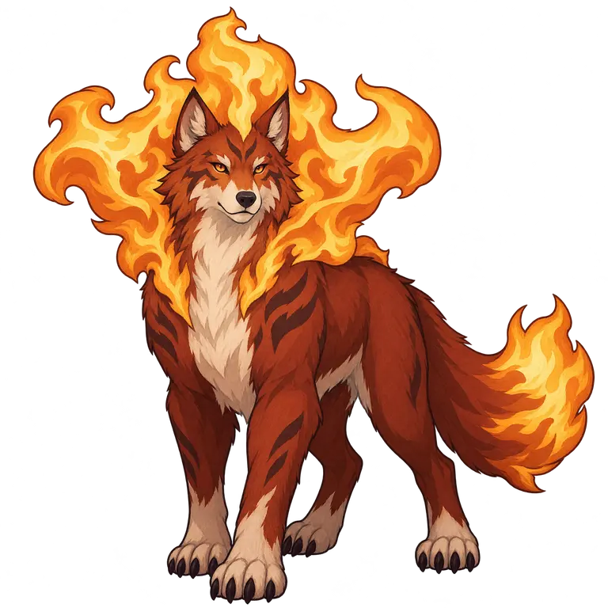

Wildbond · the making of our companions
A small promise.
A spectacular payoff.
A living portfolio of the choices that shaped our creatures. The first sketches, the paths we tried, and the moment a design began to feel like a reward.
Design revisions tell the story of our work. Life stages tell the story of the creature. Explore both below.

01 Grounded beginnings.
02 A visible promise.
03 A transformed silhouette.
04 The same companion.
The first three families
Follow the design.
Recorded reference rounds, 13 October 2026.
More families can join as their history develops.
Loading the design journal…
Keep the lesson, not just the picture.
Our early grown forms were charming, but often looked like larger animals. The stronger directions change the whole outline: a crown of fire, an opening wave frill, a living canopy. Each still carries the promise of its small beginning.
Approval has a scope. The fire-crown silhouette is approved as a direction. Tide and Grove payoff images remain candidates. These pictures are reference work; a sprite, rig or 3D model needs its own review.
Life-stage names here describe the EVO-0 reference round; middle names are provisional. Existing image filenames are preserved. The current catalogue and game data determine implementation. Different reference scales and viewpoints are not a size chart. Generated-image rights remain unverified.